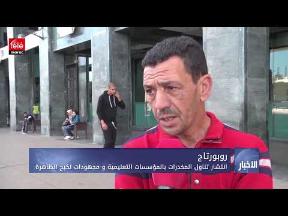
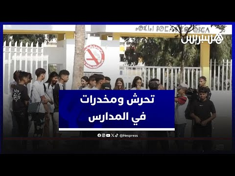
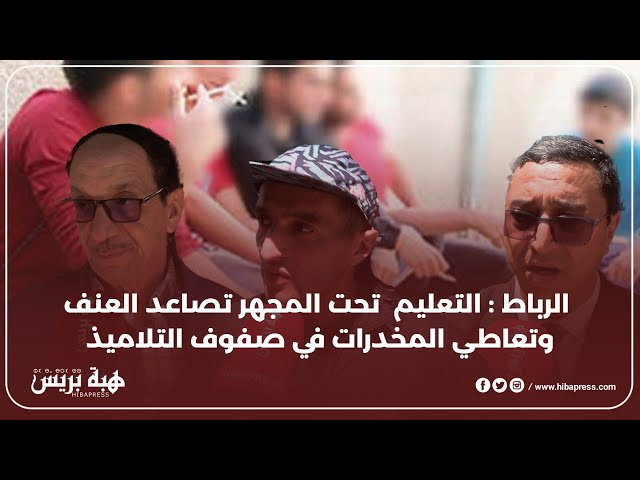
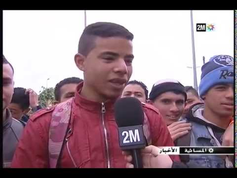
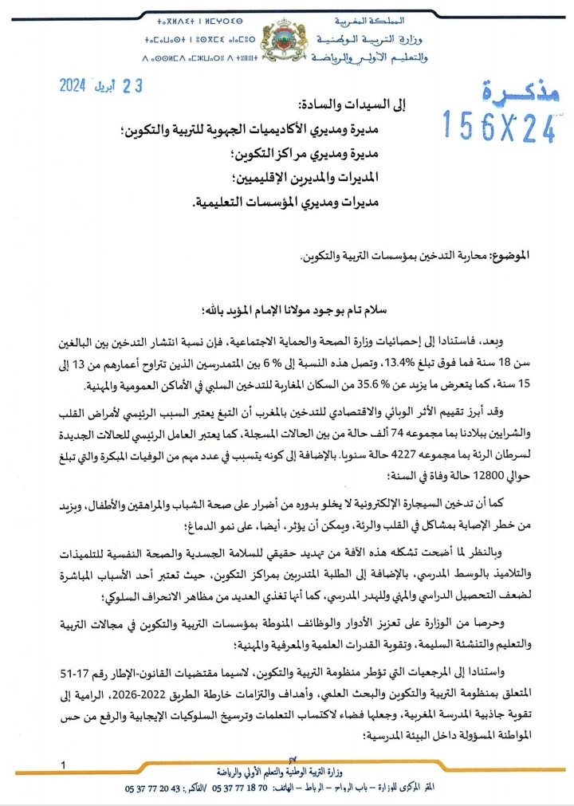

أحصاءات وشهادات متعلقة بالظاهرة
شهادات حية




ماذا تقول الأرقام؟
في تقرير صادر عن المجلس الأعلى للتربية والتكوين بتاريخ 05 دجنبر 2021، تبيّن أن التدخين داخل المؤسسات التعليمية في المغرب بلغ 7% في الابتدائي و12% في الإعدادي، مع تأكيد انتشار الظاهرة وغياب التوعية الكافية، وتأثيرها السلبي على التحصيل الدراسي.
وفي تقرير وزارة التربية الوطنية بتاريخ 26 أبريل 2024، بلغت نسبة التدخين بين التلاميذ (13–15 سنة) حوالي 6%، مع التأكيد على خطورته على الصحة والدراسة، وإطلاق إجراءات لمحاربته مثل منع التدخين داخل المؤسسات، وتوسيع برامج “مدارس بدون تدخين”، وتعزيز التوعية والتنسيق مع الجهات الأمنية والمجتمع المدني.
المذكرات الوزارية المتعلقة به:
المذكرة (24-156) الصادرة في أبريل لمحاربة التدخين في المدارس، وتشمل:
- إجراءات قانونية مثل لافتات «ممنوع التدخين»
- تفعيل القانون 15-91
- إجراءات تربوية مثل برنامج «إعداديات وثانويات بدون تدخين»
- إنشاء «نوادي صحية»
- تنظيم مسابقات وطنية وبرامج تنشيط
- تنسيق أمني لمكافحة مروّجي التبغ والمخدرات قرب المؤسسات

برنامج “إعداديات وثانويات بدون تدخين” (2024)
- أطلق وزير التربية الوطنية شكيب بنموسى هذا البرنامج يوم 01 يونيو 2024
- تم إحداث 2835 ناديًا صحيًا داخل المؤسسات التعليمية
- الهدف: التوعية والوقاية من التدخين والمخدرات
- حماية التلاميذ وتشجيعهم على الإقلاع عن التدخين
- تعزيز الثقافة الصحية داخل الوسط المدرسي
الفقرة التالية:
https://anouard11.github.io/school_third/